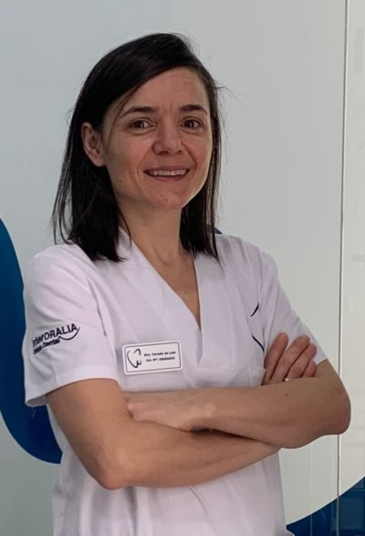
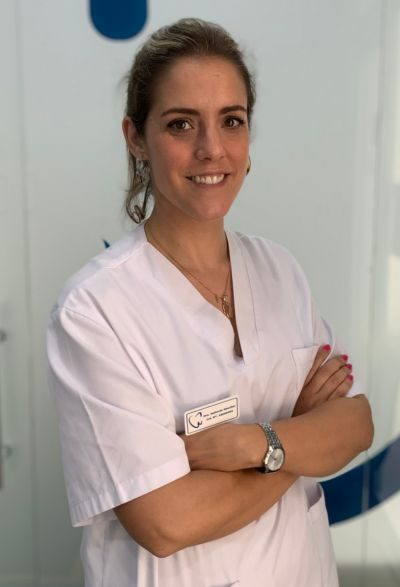
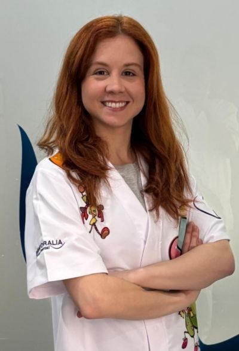
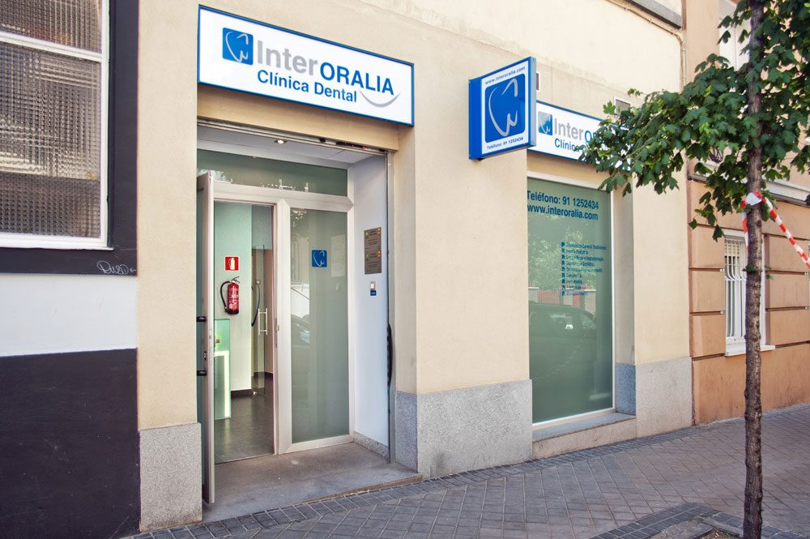

“No sé si mi hijo necesita ortodoncia ya.”
En InterORALIA: nuestra odontopediatra y ortodoncista infantil te dice si hace falta ahora o si es mejor esperar.
Garantías sanitarias
Seamos sinceros
Las resolvemos en el estudio gratuito.
“No sé si mi hijo necesita ortodoncia ya.”
En InterORALIA: nuestra odontopediatra y ortodoncista infantil te dice si hace falta ahora o si es mejor esperar.
“Soy adulto, ¿no es tarde para mí?”
En InterORALIA: nunca es tarde. Con Invisalign o brackets estéticos alineamos tu sonrisa sin que se note.
“Dos ortodoncias en casa son mucho dinero.”
En InterORALIA: precio cerrado y financiación hasta 36 meses, para que la cuota encaje en el presupuesto familiar.
Para padres e hijos
Trae a tus hijos y, de paso, mira tu sonrisa. Os decimos quién necesita ortodoncia, cuándo y cuánto cuesta. Gratis para toda la familia.
Quedan 12 plazas en este mes
Tu tranquilidad, por escrito
Escuchamos y diseñamos el tratamiento a medida, siempre con un trato transparente.
Más de 25 años y la confianza de cientos de familias de Chamberí.
Financia tu tratamiento con cuotas que se adaptan a ti.
Tratamientos
Odontología integral para toda la familia, con tecnología digital y trato cercano.

Alineadores transparentes para adolescentes y adultos.
Quiero valorar mi caso →
La Dra. María Layos cuida la boca de los peques y su crecimiento.
Quiero valorar mi caso →Implantes con tecnología digital.
Reservar valoración →Carillas y estética dental.
Reservar valoración →Metálicos o estéticos.
Reservar valoración →Prevención para toda la familia.
Reservar valoración →Quién te va a atender
Graduadas en universidades públicas españolas y especializadas en implantología, ortodoncia y odontopediatría.

Directora médica

Ortodoncista y odontóloga

Odontopediatra y ortodoncista infantil
Así de fácil
Elige día y hora online o llámanos. Te confirmamos la cita por teléfono.
Ortodoncista y odontopediatra valoran a toda la familia y os explican las opciones.
Te llevas tu plan por escrito con el precio total y la cuota mensual. Sin presión y sin letra pequeña.


La clínica
En la calle Guzmán el Bueno, a un paso de Argüelles y del metro Islas Filipinas.
Financiación
Que el dinero no sea la razón para posponer tu salud. Calcula aquí cuánto pagarías al mes y en tu primera visita te damos la cifra exacta.
Cálculo orientativo. Financiación sujeta a aprobación; consulta condiciones en tu estudio.
Opiniones
Lee lo que opinan de nosotros en Google antes de venir.
Preguntas frecuentes
¿Tienes otra duda? Llámanos al 91 125 24 34 y te la resolvemos en un minuto.
No hay trampa. Preferimos que nos conozcas sin riesgo: si te gusta cómo trabajamos, te quedarás con nosotros muchos años. Incluye valoración con la ortodoncista, revisión infantil con la odontopediatra y un plan por escrito con precio cerrado.
Hacia los 6-7 años conviene una primera valoración. Así detectamos a tiempo problemas de crecimiento.
No. Te llevas tu plan y tu presupuesto por escrito y decides tú, cuando quieras. Sin llamadas insistentes.
Sí, financiamos tu tratamiento hasta 36 meses, sujeto a aprobación.
Atendemos con cita previa. Puedes elegir día y hora directamente en esta web y te llamamos para confirmarla.
Reserva online · 1 minuto
Quedan 12 plazas en este mes
Horario: con cita previa
¿Prefieres llamar? 91 125 24 34 · WhatsApp 672 287 490
Horario online
Horario actualizado en tiempo real (hora de Madrid). Y aunque estemos cerrados, puedes reservar tu cita online las 24 horas: te la confirmamos en cuanto abramos.
Festivos nacionales cerrado. Citas con cita previa.
Dónde estamos
Antes de irte
Para padres e hijos, con ortodoncista y odontopediatra. Quedan 10 plazas en este mes.
Sí, quiero mi plaza